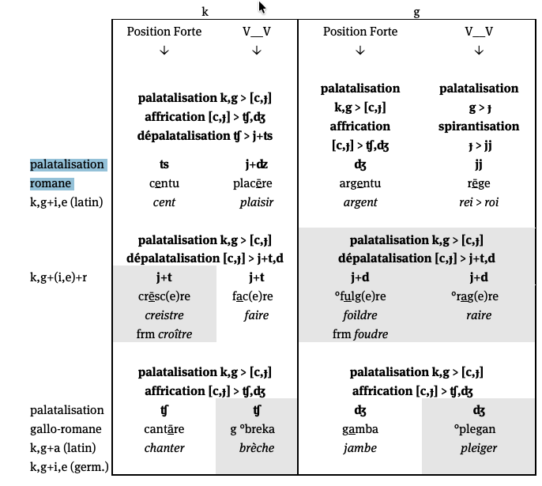
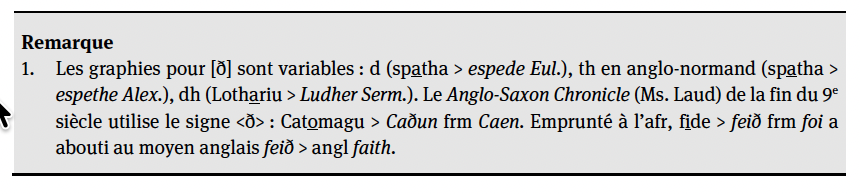

Évolutions phonétiques
La notion de « évolution phonétique »
Le rôle de la structure du mot dans le changement phonétique
Les principales évolutions phonétiques dans l’histoire du français
Exercice
6.1 Introduction
La phonétique est un des domaines sur lesquels opère le changement linguistique.
Ce qui change en évolution phonétique, c’est la prononciation d’un phonème ou d’un groupe de phonèmes avec pour conséquence une prononciation altérée du mot dans son intégralité.
| LATIN | FRANÇAIS MODERNE |
| mansionem | maison |
| casam | chez |
| vinum | vin |
6.1.1 Évolution phonétique
La prononciation des phonèmes et des mots n’évolue pas de manière individuelle, i.e. les mots ne subissent pas des évolutions phonétiques idiosyncratiques qu’on ne retrouve pas ailleurs dans la même langue.
Des mots ayant une structure phonétique analogue ont tendance à évoluer de la même manière ou d’une manière analogue.
Cela nous permet d’établir des règles ou lois phonétiques, i.e. des tendances évolutives systématiques, c.-à-d. des évolutions phonétiques qui se produisent dans les mêmes contextes phonétiques et sous les mêmes conditions.
6.1.1.1 Exemple : du latin aux langues romanes
| Latin | Français | Roumain | Sarde | Italien | Espagnol | Portugais |
| cupam | coupe | cupă | cuppa | coppa | copa | copa |
| capram | chèvre | capră | craba | capra | cabra | cabra |
| caballum | cheval | cal | caddu | cavallo | caballo | cavalo |
| mutare | muer | muta | mudare | mutare | mudar | mudar |
| videre | voir | vedea | bíere | vedere | ver | ver |
Grâce à des études comparatives systématiques du latin et des langues romanes, on a pu établir des règles phonétiques du latin aux langues romanes.
Ces règles se subdivisent en deux groupes :
Celles qui se manifestent dans (presque) toutes les langues romanes et qui se sont ainsi produites avant la diversification du latin, i.e. en latin vulgaire.
Celles qui se manifestent dans une seule langue romane et qui se sont ainsi produites après la diversification du latin sur le territoire français, italien, espagnol, portugais, roumain,…
6.1.2 Une notion clé : la syllabe
La syllabe est cruciale dans l’évolution phonétique : les sons évoluent selon la structure de la syllabe dont ils font partie.
6.1.2.0.1 Le caractère ouvert ou fermé de la syllabe ; par exemple : les voyelles en syllabes fermées sont plus résistantes au changement phonétique que les voyelles en syllabes ouvertes.
| LATIN CLASSIQUE | FRANÇAIS MODERNE | BILAN |
| caballum [kabalum] | cheval [ʃəval] | M + M + O |
| carrum [karum] | char [ʃaʁ] | M + O |
Les syllabes ouvertes se terminent par une voyelle. Structurellement, une syllabe est ouverte si elle présente :
Le schéma \((C/G) + V\) : ta-bleau, bien
Le schéma \((C/G) + V\) devant \(C_{occlusive/fricative} + [ʁ]/[l] (+ V)\) : pé-tri-fi-ca-tion, dou-ble
La voyelle d’une syllabe ouverte est une voyelle libre.
Les syllabes fermées se terminent par une consonne.
Structurellement, une syllabe est fermée si la voyelle centrale est suivie de deux consonnes (sauf la séquence \(C_{occlusive/fricative} + [ʁ]\) ou \([l]\)) ou par une consonne en fin de mot : par-tie, four-chette
La voyelle d’une syllabe fermée est une voyelle entravée.
6.1.2.0.2 Le caractère tonique ou atone de la syllabe
par exemple : les voyelles toniques se maintiennent mieux que les voyelles atones (sous forme altérée ou non).
| LATIN CLASSIQUE | FRANÇAIS MODERNE | BILAN |
| securum [sekurum] | sûr [syʁ] | O + M + O |
| caballum [kabalum] | cheval [ʃəval] | M + M + O |
| murum [murum] | mur [myʁ] | M + O |
6.1.2.0.2.1 Types de mots selon la syllabe accentuée
Mots oxytons : des mots accentués sur la dernière syllabe.
- ca.fé, ta.bleau, stra.té.gie
Mots paroxytons : des mots accentués sur la pénultième syllabe (par ex. en latin).
- pe.dem (‘pied’), ne.po.tem (‘neveu’), ar.mum (‘arme’)
Mots proparoxytons : des mots accentués sur l’antépénultième syllabe .
- a.ni.ma (‘âme’), pro.mit.te.re (‘promettre’)
Mots clitiques : des mots non accentués (par ex. en français).
- Le, mon, ce, il, à, de
6.1.2.0.3 La place de la syllabe atone par rapport à la syllabe tonique
par exemple : les voyelles atones initiales se maintiennent mieux que les voyelles atones finales (sous forme altérée ou non).
| LATIN CLASSIQUE | FRANÇAIS MODERNE | BILAN |
| murum [murum] | mur [myʁ] | M + O |
| caballum [kabalum] | cheval [ʃəval] | M + M + O |
| securum [sekurum] | sûr [syʁ] | O + M + O |
lat. dormitorium (‘dortoir’)
| dor | mi | to | ri | um |
| initiale | prétonique interne | tonique | posttonique interne | finale |
Les mots toniques contiennent en principe une seule voyelle tonique. Seuls les mots longs en ont parfois deux, l’une portant l’accent primaire et l’autre l’accent secondaire.
fr. néonatalogie
lat. dormitorium
6.1.2.0.3.1 Voyelles contiguës
Si deux voyelles se succèdent, elles peuvent :
Être séparées par une coupe syllabique et constituer deux syllabes individuelles ; les deux voyelles sont en position de « hiatus ».
lat. hodie [hodie] \(\rightarrow\) *[hodje] (‘aujourd’hui’)
lat. fui [fui] \(\rightarrow\) *[fwi] (‘j’ai été’)
fr. nuage [nyaʒ] \(\rightarrow\) *[nɥaʒ]
Appartenir à la même syllabe, pour former une diphtongue ; une des deux voyelles évolue vers un glide ; selon la position du glide on distingue entre des diphtongues :
ascendantes/croissantes/ouvrantes : glide + voyelle
- fr. pied, quoi | it. buono (‘bon’) | esp. bueno (‘bon’)
descendantes/décroissantes/fermantes : voyelle + glide
- a.fr. noise (‘bruit’), gueule (‘gueule’) | néerl. koud (‘froid’)
Les diphtongues s’appuient sur le phénomène de synérèse, qui se définit comme la fusion de deux voyelles contiguës en une seule syllabe, ou encore le traitement monosyllabique de deux voyelles contiguës.
Le français moderne connaît seulement des diphtongues ascendantes.
\(\neq\) langues germaniques (surtout des diphtongues descendantes).
\(\neq\) ancien français : les deux types de diphtongues.
6.1.3 Position des consonnes
La position des consonnes à l’intérieur du mot est cruciale pour leur évolution phonétique.
Il y a quatre types de consonnes selon leur position dans le mot :
| Type | Exemple |
| Consonnes explosives | Don, Structure |
| Consonnes finales | Nef |
| Consonnes intervocaliques | Cadeau |
| Consonnes implosives | Structure |
6.2 Typologie d’évolutions phonétiques
Le changement phonétique est régulier s’il se produit dans tous les contextes qui conditionnent le changement phonétique dans la même aire linguistique.
| LATIN CLASSIQUE | FRANÇAIS MODERNE | BILAN |
| datum | > dé | \([a] > [e]\) |
| pratum | > pré | omission du \([t]\), \([u]\) et \([m]\) |
| natum | > né | perte d’une syllabe |
| LATIN CLASSIQUE | FRANÇAIS MODERNE | BILAN |
| centum | > cent | \([k] > [s]\) devant \([e]\) ou \([i]\) |
| cervum | > cerf | |
| ceram | > cire | |
| circulum | > cercle | |
| cinerem | > cendre |
| LATIN CLASSIQUE | FRANÇAIS MODERNE | BILAN |
| campum | > champ | \([k] > [\int]\) devant \([a]\) |
| cantare | > chanter | |
| capram | > chèvre |
| LATIN CLASSIQUE | FRANÇAIS | BILAN |
| carum | cher | \([r] > [w]\) |
| carrum | > char |
| ESPAGNOL | BILAN |
| caro | \([r] > [r]\) |
| carro | \([r] > [r]\) |
6.2.1 Deux changements phonétiques généraux
6.2.2 Assimilation
un son devient similaire à un autre son qui se trouve d’habitude dans le contexte phonétique adjacent.
| LATIN CLASSIQUE | ITALIEN | BILAN |
| octo | > otto | \([k] > [t]\) |
| noctem | > notte | |
| factum | > fatto |
6.2.2.1 Trois types d’assimilation
Totale vs partielle :
lat. octo > it. otto
lat. lactem > roum. lapte
Par contact vs par distance :
lat. octo > it. otto
all. eine Nacht vs zwei Nächte
Progressive vs régressive (anticipatoire) :
fr. cheveu [ʃəvø] prononciation lente vs [ʃfø] prononciation rapide
lat. octo > it. otto
all. eine Nacht vs zwei Nächte
6.2.3 Dissimilation
Un son se différencie d’un autre son, celui-ci pouvant être à une certaine distance phonétique.
| LATIN CLASSIQUE | FRANÇAIS | ITALIEN | ESPAGNOL | ANGLAIS |
| peregrinus | > pèlerin | pellegrino | peregrino | pilgrim |
| arbor | > arbre | árbol |
- La dissimilation est un changement plus occasionnel que l’assimilation.
6.2.4 Changements phonétiques spécifiques
Suppressions
Syncope
Apocope
Aphérèse
Insertions
Prothèse
Épenthèse
Allongement compensatoire
Rhotacisme
Métathèse
Haplologie
Diphtongaison/monophtongaison
Lénition
Palatalisation
Nasalisation
6.2.4.1 Syncope
Suppression d’un son, typiquement une voyelle, à l’intérieur d’un mot.
| LATIN CLASSIQUE | FRANÇAIS | ESPAGNOL | ITALIEN |
| populum | > peuple | pueblo | popolo |
| calidum | > chaud | cálido | caldo |
| viridem | > vert | verde | verde |
La voyelle syncopée est atone et soit prétonique, soit posttonique.
Syncope > réduction syllabique.
Une consonne peut également être syncopée : fr. nordman > normand
6.2.4.2 Apocope
Suppression d’un son, d’habitude une voyelle, à la fin d’un mot.
| LATIN CLASSIQUE | FRANÇAIS | ESPAGNOL | ITALIEN |
| panem | > pain | pan | pane |
| petram | > pierre | piedra | pietra |
| bonum | > bon | bueno | buono |
L’apocope est particulièrement fréquente dans le passage du latin au français.
Apocope > réduction syllabique.
6.2.4.3 Aphérèse
Suppression d’un son, d’habitude une voyelle, au début d’un mot.
| LATIN CLASSIQUE | FRANÇAIS MODERNE | ESPAGNOL |
| apothecam (‘magasin de vins’) | > bodega | |
| Sébastien > Bastien | ||
| Antoine > Toine |
- Aphérèse > réduction syllabique.
6.2.4.4 Prothèse
Insertion d’un son au début d’un mot.
| LATIN CLASSIQUE | FRANÇAIS | ESPAGNOL |
| scholam | > école | escuela |
| stellam | > étoile | estrella |
| stabulam | > étable | establo |
| spinam | > épine | espina |
Prothèse > accroissement syllabique.
Voyelle insérée : voyelle « prothétique ».
Prothèse \(\Leftrightarrow\) aphérèse.
6.2.4.5 Épenthèse
Insertion d’une consonne entre deux autres consonnes, afin de faciliter la prononciation (= excroissance).
| LATIN CLASSIQUE | FRANÇAIS |
| numerum | > nombre |
| cameram | > chambre |
| cumulum | > comble |
| essere | > a.fr estre > fr.mod. être |
Pas d’accroissement syllabique.
Épenthèse \(\Leftrightarrow\) syncope d’une consonne.
6.2.4.6 Allongement compensatoire
Allongement d’une voyelle suite à la disparition d’une consonne (compensation).
| LATIN CLASSIQUE | FRANÇAIS |
| fenestram | > fenêtre |
| pastam | > pâte |
| essere | > a.fr estre > fr.mod. être |
- En français moderne, l’allongement compensatoire est marqué par l’accent circonflexe.
6.2.4.7 Rhotacisme
Changement d’un phonème, très souvent un \([s]\), vers un \([r]\).
| LATIN CLASSIQUE N.M.SG | LATIN CLASSIQUE GEN.M.SG |
| flos (‘fleur’) | > *flosis > floris |
| honos (‘honneur’) | > *honosis > honoris |
- Le rhotacisme est très rare dans l’évolution du (latin au) français, mais plus fréquent dans l’évolution du (indo-européen au) latin (par ex. infinitif : -ese/-ire > -ere/-ire).
6.2.4.8 Métathèse
Changement de position d’un son.
| LATIN CLASSIQUE | ESPAGNOL | FRANÇAIS | ITALIEN | ANGLAIS |
| parabolam | > palabra | |||
| berbicem | > brebis | berbice | ||
| crocodilus/cocodrilus | > cocodrilo | a.fr. cocodrille > fr.mod. crocodile | coccodrillo | crocodile |
6.2.4.9 Haplologie
Simplification d’une séquence phonétique doublée ou proche.
FRANÇAIS :
mysticicisme > mysticisme
pacificisme > pacifisme
ANGLAIS :
- Anglaland > England
Haplologie > réduction syllabique.
6.2.6 Voyelles : où et comment ?
| Dimension | Le son devient… | Terme | Exemple du cours |
|---|---|---|---|
| Avant / arrière | plus antérieur | antériorisation | lat. murum [u] > fr. mur [y] |
| plus central | centralisation | lat. caballum [a] > cheval [ə] | |
| Aperture | plus fermé | fermeture (élévation) | [æ] > [e] : pratum > pré |
| plus ouvert | ouverture (abaissement) | [we] > [wa] : roi | |
| Nasalité | nasal | nasalisation | vinum > vin |
| de nouveau oral | dénasalisation | afr. lune [lỹnə] > [lyn] | |
| Structure | une diphtongue | diphtongaison | pedem > pied |
| une voyelle simple | monophtongaison | aurum [aw] > or [ɔ] |
6.2.7 Consonnes : lieu et mode d’articulation
| Dimension | Le son devient… | Terme | Exemple du cours |
|---|---|---|---|
| Lieu | plus palatal | palatalisation | campum [k] > champ [ʃ] |
| moins palatal | dépalatalisation | [tʃ] > [ts] : centum > cent | |
| plus en arrière (vélaire) | vélarisation | [tl] > [kl] : vetulum > vieil | |
| uvulaire | uvularisation | [r] roulé > [ʁ] | |
| Mode | une affriquée | affrication | [c] > [tʃ] |
| plus une affriquée | désaffrication | [tʃ] > [ʃ] : chanter | |
| une sifflante [s, ts] | assibilation | [tj] > [ts] : cantionem | |
| une fricative | spirantisation (fricativisation) | [b] > [β] > [v] |
6.2.8 Consonnes : force, voisement et statut
| Le son devient… | Terme | Exemple du cours |
|---|---|---|
| sonore | voisement (sonorisation) | [t] > [d] : vita > afr. vide |
| plus faible (sonore → fricative → zéro) | lénition | vita > vide > vie |
| simple (au lieu de double) | dégémination | gutta > goute |
| une voyelle ou un glide | vocalisation | [l] > [w] : alba > aube |
| un glide (au lieu d’une voyelle) | consonification | [e] > [j] : vinea > vigne |
| rien du tout | amuïssement (chute) | forest > forêt |
Ajouts et suppressions (syncope, apocope, prothèse, épenthèse, métathèse…) : voir plus loin. Ces mêmes termes reviennent dans l’histoire du français : vous devrez les retrouver vous-mêmes !
6.2.8.1 Monophtongaison
Passage d’une diphtongue à une monophtongue.
LATIN CLASSIQUE \(\rightarrow\) LATIN VULGAIRE
poenam [ɔj] > poenam [e]
caelum [aj] > caelum [ɛ]
causam [aw] > causam [ɔ]
| LATIN CLASSIQUE | FRANÇAIS | ESPAGNOL | ITALIEN |
| aurum [aw] | > or | oro | oro |
6.2.8.2 Diphtongaison
Passage d’une monophtongue à une diphtongue.
| LATIN CLASSIQUE | ANCIEN FRANÇAIS | FRANÇAIS MODERNE |
| florem | > flour (cf. angl.) | > fleur [eu] > fleur [œ] |
Les diphtongaisons affectent surtout les voyelles toniques et libres.
Les diphtongaisons sont très fréquentes dans le passage du latin au français.
6.2.9 Types de diphtongaisons du latin au français
1. Diphtongaisons romanes
| Latin | Français | Espagnol | Italien |
| pedem | pied | pie | piede |
| novum | neuf | nuevo | nuovo |
Chronologie : \(3^e-4^e\) s.
Portée : le territoire roman
Type : ascendantes
Voyelles affectées : [ɔ] et [ɛ]
6.2.10 Types de diphtongaisons du latin au français
2. Diphtongaisons françaises
| LATIN CLASSIQUE | FRANÇAIS | ESPAGNOL | ITALIEN |
| patrem | > père | padre | padre |
| serum | > soir | noche | sera |
| florem | > fleur | flor | fiore |
Chronologie : \(6^e\) s.
Portée : le territoire gaulois
Type : descendantes (puis > ascendantes)
Voyelles affectées : [e], [o] et [a]
6.2.11 Diphtongaisons françaises
Le sort du \([e]\) : \([e] > [ei]\) au \(6^e\) s. \(> [oi]\) au milieu du \(12^e\) s. \(> [ue]\) à la fin du \(12^e\) s. \(> [wɛ]\) ou \([wa]\) au \(13^e\) s. (sans règle) :
| LATIN CLASSIQUE | FRANÇAIS | BILAN |
| serum | > soir | \([e] > [wa]\) |
| telum | > toile | |
| tres | > trois | |
| cretam | > craie | \([e] > [ɛ]\) |
| *cantebat | > chantait | |
| monetam | > monnaie |
6.2.12 Diphtongaisons françaises
Le sort du \([a]\) : \([a] > [ae]\) au \(6^e\) s. \(> [æ]\) au \(7^e\) s. \(> [e]\) \(9^e\) s. (selon la loi de position) :
| LATIN CLASSIQUE | FRANÇAIS | BILAN |
| pratum | > pré | \([a] > [e]\) en syllabe ouverte |
| claritatem | > clarté | |
| amare | > aimer | |
| marem | > mer | |
| patrem | > père | |
| salem | > sel | \([a] > [ɛ]\) en syllabe fermée |
6.2.13 Diphtongaisons françaises
Le sort du \([o]\) : \([o] > [ou]\) au \(6^e\) s. \(> [eu]\) au \(11^e\) s. \(> [ø]\) au \(13^e\) s. (loi de position) :
| LATIN CLASSIQUE | FRANÇAIS | BILAN |
| nepotem | > neveu | \([o] > [ø]\) en syllabe ouverte |
| duos | > deux | |
| florem | > fleur | \([o] > [œ]\) en syllabe fermée |
| gulam | > gueule |
6.2.13.1 Lénition
Assimilation d’une consonne intervocalique sous forme d’une sonorisation, qui peut être suivie par une fricativisation et enfin une disparition totale (= sonorisation intervocalique) : tout mouvement vers le pôle [+sonore] dans l’échelle de sonorité :
6.2.14 Exercice 1
lat. castellum > fr. châteauSyncope du
[s]implosif / amuïssement du[s]menant à un allongement compensatoire (marqué par l’accent circonflexe sur leâ).Palatalisation de la consonne vélaire
[k]devant[a]([k]>[ʃ], écritch).Monophtongaison / évolution de la voyelle tonique.
Apocope de la voyelle finale latine.
gr. ancien ἐπίσκοπος > lat. episcopus > fr. évêque, angl. bishopProthèse en latin/ancien français (ajout du
e-initial devant le groupe[sp]).Lénition de la consonne intervocalique
[p]>[v]en français.Syncope de la voyelle atone interne.
Aphérèse dans l’évolution vers l’anglais bishop (perte du
e-initial).Allongement compensatoire en français (ê suite au changement/perte du
[s]).
lat. dormitorium > fr. dortoirSyncope de la voyelle atone prétonique interne (
[i]).Diphtongaison française de la voyelle tonique (
[e]>[oi]/[wa]).Apocope du suffixe/voyelle finale.
lat. septimanam > it. settimana, fr. semaine, occ. semaroAssimilation en italien (
[pt]>[tt]).Syncope de la voyelle atone interne (
[i]).Nasalisation en français (
[ai]+[n]).Rhotacisme en occitan (
[n]>[r]).
lat. ovum > fr. œuf, it. uovo, esp. huevoDiphtongaison romane en italien et espagnol (
[ɔ]>uo/ue).Diphtongaison française de la voyelle tonique en syllabe ouverte/fermée (
[o]/[ɔ]>[œ]/[ø]).
esp. azúcar > fr. sucre, it. zuccheroAphérèse du
a-initial en français et en italien.Assimilation / adaptation consonantique.
fr. Clermont-Montferrand > fr. Clermont-Ferrand- Haplologie (simplification de la séquence répétée
-mont-Mont-).
- Haplologie (simplification de la séquence répétée
lat. tenerem > fr. tendreSyncope de la voyelle atone posttonique.
Épenthèse de la consonne de transition
[d]entre[n]et[r].
6.2.15 Exercice 2
lat. formaticum > fr. fromage, it. formaggio, occ. formatgeMétathèse du
[r]en français (form->from-).Palatalisation du
[k]intervocalique devant voyelle.
lat. solem > roum. soare, occ. sorelh, fr. soleil, esp. solRhotacisme en roumain (
[l]>[r]).Apocope de la syllabe/voyelle finale.
lat. cantare > fr. chanter, it. cantarePalatalisation du
[k]devant[a]en français ([k]>[ʃ]).Nasalisation de la voyelle
[a]devant consonne nasale en français.
fr. tragico-comique > fr. tragi-comique- Haplologie (suppression de la syllabe répétée
-co-).
- Haplologie (suppression de la syllabe répétée
fr. spectacle > fr. *pestacle(langage enfantin/erreur populaire)- Métathèse (inversion des consonnes
[sp]>[ps]).
- Métathèse (inversion des consonnes
lat. fenestram > fr. fenêtreSyncope / amuïssement du
[s]implosif.Allongement compensatoire (marqué par l’accent circonflexe ê).
Apocope de la voyelle finale.
angl. probablely > angl. probably- Haplologie / syncope de la syllabe atone répétée
-le-.
- Haplologie / syncope de la syllabe atone répétée
lat. simulat > fr. sembleSyncope de la voyelle atone interne.
Épenthèse de la consonne
[b]entre[m]et[l].
6.2.16 Exercice 3
lat. lunam > occ. luro- Rhotacisme (
[n]intervocalique >[r]).
- Rhotacisme (
lat. tegulam > a.fr. tiule > fr. mod. tuileSyncope de la voyelle atone interne
[u].Vocalisation / Lénition de la consonne vélaire
[g].Métathèse / évolution des voyelles/glides (
iu>ui).
lat. septem > fr. sept, it. sette, esp. sieteAssimilation en italien (
[pt]>[tt]).Diphtongaison romane en espagnol (
[ɛ]>ie).Apocope de la voyelle finale en français.
gr. amphiphoreus > gr. amphoreus- Haplologie (suppression de la syllabe répétée
-phi-).
- Haplologie (suppression de la syllabe répétée
lat. vinum > fr. vin, it. vino, esp. vinoNasalisation de la voyelle
[i]en français.Apocope de la voyelle finale en français.
lat. ponere > fr. pondreSyncope de la voyelle atone.
Épenthèse du
[d]de transition entre[n]et[r].
lat. scribere > a.fr. escrire, fr.mod. écrire, esp. escribirProthèse (insertion d’un
e-initial devant[sk]).Lénition de la consonne intervocalique
[b]>[v](écrit r/v).Allongement compensatoire en français moderne suite à la perte du
[s](é-).
lat. tempus > fr. tempsNasalisation de la voyelle devant consonne nasale (
[e]+[m]>[ɑ̃]).Apocope / amuïssement des consonnes finales à l’oral.
6.3 Les changements dans l’histoire du français
6.3.1 Mode d’emploi
Pour chaque étape de l’histoire :
- Observez les données.
- Proposez le nom du changement (avec les termes de la première partie).
- Indice ➜ le contexte du changement s’affiche.
- Réponse ➜ le nom et la règle s’affichent.
Les règles sont notées A → B / C ___ D : A devient B entre C et D.
6.3.2 2e s. av. J.-C.
Quel changement ?
| lat | lt | afr | frm |
|---|---|---|---|
| folia | l.j | fueille | feuille |
| vīnea | n.j | vigne | |
| vidua | d.w | veuve | |
| coāg(u)lāre | k.w | caillier | cailler |
| lat | lt | afr | frm |
|---|---|---|---|
| facia | k.j | face | |
| ārea | r.j | aire | |
| annuāle | n.w | anvel | annuel |
- cfr foglio, vigna, vedova, cagliare, faccia, aria, annuale
/ en hiatus
Consonification latine
- i, e (voyelles antérieures) → [j] (glide palatal) / en hiatus
- u, o (voyelles postérieures) → [w] (glide labio-vélaire) / en hiatus
- a ne subit pas cet effet

6.3.3 1er s. ap. J.-C.
Quel changement ?
- k → /ʦ/ / {#, C} ___ i, e
- k → /jʣ/ / V ___ i, e
- g → /ʤ/ / {#, C} ___ i, e
- g → géminé /jj/ / V ___ i, e
Palatalisation romane : k,g+i,e > [c,ɟ]
- 1er processus : la palatalisation
- 2e processus : l’affrication ???

6.3.4 1er s. ap. J.-C.
Quel changement ?
A
- montānea > montagne
- cōnsiliārī > conseillier (fr. mod. conseiller)
- °glacia > glace
B
- insignia > enseigne
- alliu > ail
- Francia > France
A : / V ___ V · B : / {#, C} ___
nj, lj, kj > ɲɲ, ʎʎ, tts
- nj, lj, kj → ɲɲ, ʎʎ, tts / V ___ V
- nj, lj, kj → ɲ, ʎ, ts / {#, C} ___
6.3.5 latin tardif 1er s.
Quel changement ?
A
- cantiōne > °canʦjōne > chançon, ⟨ç⟩ = [ʦ] (fr. mod. chanson)
B
- ratiōne > raison, ⟨s⟩ = [ʣ]
A : / C ___ · B : / V ___ V
Assibilation tj > tsj
- tj → [ʦ] / C ___
- tj → [ʣ] / V ___ V
6.3.6 latin tardif
Quel changement ?
- vet(u)lu > °veclu > vieil
- sit(u)la > °sicla > seille
- vetustu > vétuste 🚨
t.l > k.l
- tl, dl → [kl, gl]
- Datation : dès le latin
6.3.7 latin tardif – afr
Quel changement ?
A
- tem(p)tāre > tenter
- san(c)ta > sainte
- hos(pi)tāle > (h)ostel > hôtel
- gal(bi)nu > jalne > jaune
- man(dū)cāre > mangier > manger
- comp(u)tāre > conter (fr. mod. compter)
- ser(v)iente > sergent
B
- comprēnd(e)re > comprendre
- umbra > ombre
- rump(e)re > rompre
- alt(e)ru > altre > autre
- ung(u)la > ongle
A : / C ___ C · B : C.TR
CCC : élimination de la C médiane
- C → ∅ / C ___ C (consonne médiane éliminée : CCC → C₁C₃)
- mais C.TR → maintenu
6.3.8 latin tardif 2e s.
Quel changement ?
A
- paria > paire
- coriu > cuir
- feria > foire
- °cūpriu > cuivre
- °ebriu > ivre
- repatriāre > repairier > repairer
- bāsiāre > baisier > baiser
- ma(n)siōne > maison
- nausea > noise
B
- cantiōne > chançon > chanson
- °captiāre > chacier > chasser
- °matteūca > maçue > massue
- °plattea > place
- °fortiāre > forcier > forcer
- °altiāre > haucier > hausser
- °tractiāre > tracier > tracer
- burriōne > borjon > bourgeon
A : / V ___ V · B : / C ___
Métathèse
- C.j → j.C / V ___ V (C = r, s, ʦ ; aussi TR avec r)
- C.j → maintenu / C ___ (métathèse bloquée)
6.3.9 latin tardif 2e-4e s.
Quel changement ?
A
- hodiē > hui (fr. mod. aujourd’hui)
- gaudia > joie
- medianu > moiien > moyen
- regiōne > roion (fr. mod. région)
- exagiu > essai
- corrigia > correie > courroie
B
- diurnu > jorn > jour
- Georgiu > Jorges > Georges
- hordeu > orge
- vir(i)diāriu > vergier > verger
- chīrurgia > cirurgie > chirurgie
A : / V ___ V · B : / {#, C} ___
dj, gj > ɟ
- dj, gj → [ɟ] → [jj] / V ___ V
- dj, gj → [ɟ] → [ʤ] / {#, C} ___
6.3.10 2e-3e s. : Palatalisation romane k,g+i,e > [c,ɟ]
6.3.11 3e-4e s. (1/2)
Quel changement ?
Paroxytons
- pede > pié > pied
- feru > fier
- heri > ier > hier
- petra > piere > pierre
- febre > fievre > fièvre
- cęlu > ciel
- breve > brief > bref
- mel > miel
- lętu > liet, lié > lie « joyeux » (cf. chère lie)
- lęt(u)s (Nsg) > liez
Proparoxytons
- lepore > lievre > lièvre
- eb(u)lu > hieble > hièble
- tep(i)du > tiede > tiède
- *sedicu > siege > siège
- medicu > miege « médecin »
ɛ (< lc ĕ) / tonique, syllabe ouverte
Diphtongaison romane : ɛ > ie, ɔ > uɔ
- ɛ (< lc ĕ) → [iɛ] / tonique, syllabe ouverte
- Proparoxytons, si la diphtongaison précède la syncope de la posttonique (lièvre, hièble, tiède)
- Proparoxytons, si la diphtongaison précède -Cicu → -Cju → -[ʤə] ↗219.1 (siège, miege)
6.3.12 3e-4e s. (2/2)
Quel changement ?
Paroxytons
- cor > cuer > cœur
- bove > buef > bœuf
- novu > nuef > neuf (adj.)
- proba > prueve > preuve
- novem > nuef > neuf (num.)
- *pot(e)t (3s) > puet > (il) peut
- movet > muet > (il) meut
- mola > muele > meule
Proparoxytons
- op(e)ra > uevre > œuvre
ɔ (< lc ŏ) / tonique, syllabe ouverte
Diphtongaison romane : ɛ > ie, ɔ > uɔ
- ɔ (< lc ŏ) → [uɔ] / tonique, syllabe ouverte
- Diphtongaison spontanée ; avec celle, un peu antérieure, de ɛ (< lc ĕ) → [iɛ] ↗160, elle constitue la diphtongaison romane ↗146
- Graphie normale en afr : ⟨ue⟩
- Proparoxytons, si la diphtongaison précède la syncope de la posttonique (œuvre)
6.3.13 3e s.
Quel changement ?
A
- fac(e)re > faire
- *plac(e)re > plaire
- *coc(e)re > cuire
B
- crēsc(e)re > creistre > croître
- carc(e)re > chartre
- vinc(e)re > veintre > vaincre
A : / V ___ V · B : / C. ___ (devant r)
Dépalatalisation devant r : [c,ɟ]+r > j+t,d
- k,g + (i,e) → [c,ɟ] (palatalisation) → [j] + [t,d] (dépalatalisation) / C. ___ r
- k,g + (i,e) → [j] ? / V ___ V
- k,g + (i,e) → [j] + [t] / C. ___
- L’occlusive palatale [c] devient l’occlusive dentale [t] (devant une consonne autre que r) pas de dépalatalisation : [j] + [ʦ], comme attendu
- grac(i)le > graisle (⟨s⟩ = [ʦ] > [s]) > grêle
- k,g + (i,e) suivi de la syncope : évolution particulière
- Aboutissement attendu : j + [ʣ], comme dans placēre > plaisir
- Mais fac(e)re > faire : on retrouve l’élément palatal (⟨i⟩), mais aucun représentant de la vélaire
- L’évolution semble donc être k,g + (i,e) → [j]… mais c’est un leurre
6.3.14 4e s.
Quel changement ?
- centu > *[c]entu > *[ʧ]entu > cent ⟨c⟩ = [ʦ]
- gente > *[ɟ]ente > *[ʤ]ente > gent ⟨g⟩ = [ʤ]
Affrication [c,ɟ] > tʃ,dʒ
- [c,ɟ] (palatalisation) → [ʧ,ʤ] (affrication spontanée)
- La palatalisation romane se décompose en deux processus indépendants et successifs
6.3.15 3e-4e s.
Quels changements ? (deux étapes)
| étape 1 | étape 2 | |
|---|---|---|
| p, t, k | [b, d, g] | [β] (> [v]), [ð], [ɣ] |
| b, d, g | – | [β] (> [v]), [ð], [ɣ] |
| f, s | [v, z] | – |
/ V ___ V (trajectoire de lénition des obstruantes)
Voisement et spirantisation intervocaliques
- Voisement : p, t, k → [b, d, g] ; f, s → [v, z] / V ___ V
- Spirantisation : b, d, g → [β] (> [v]), [ð], [ɣ] / V ___ V
6.3.16 3e-4e s.
Quel changement ?
- caballu > °kævællo > °ʧævællo
(toute position)
Antériorisation a > æ
- a → [æ] (toute position), palatalise k, g précédents
- Datation : [æ] au 5e s.

6.3.17 3e-5e s.
Quel changement ?
- sacrāmentu > sairement > serment
- oc(u)lu > ueil > œil
/ ___ {r, l}
Vélaires en coda : réduction à yod
- k, g → [j] / ___ {r, l}

6.3.18 3e-6e s. (1/2)
Quel changement ?
A
- caballu > cheval
B
- pavōre > peeur > peur
- matūru > meür > mûr
A : / Cpalatale ___ (atone initiale) · B : / atone initiale, en hiatus
Centralisation des voyelles atones en schwa ancien ə¹, puis syncope des voyelles centralisées
- a → maintenu / atone
- a → [e] → [ə] / Cpalatale ___ (atone initiale)
- a → [e] → [ə] / atone initiale, en hiatus
6.3.19 3e-6e s. (2/2)
Quel changement ? Où le schwa se maintient-il ?
A
- °quadrifurcu > carrefor > carrefour
- nūtrīmentu > norrement (‘nourriture’)
- petrosīliu > perresil > persil
- latrōciniu > larrecin > larcin
- paup(e)re > povre > pauvre
- mātre > mere > mère
- crēd(e)re > croire
- patre > pere > père
- frātre > frere > frère
- templu > temple
B
- meli(o)r > mieldre
- seni(o)r > sire
- pip(e)r > poivre
- insim(u)l > ensamble > ensemble
C
- rubeu > rouge
- sapidu > sage
- rīki (frk.) > riche
- sīmiu > singe
D
- carp(i)nu > charme
- hosp(i)te > oste > hôte
- galb(i)nu > jalne > jaune
- °und(e)ce > onze
E
- com(i)te > conte > comte
- as(i)nu > asne > âne
- tep(i)du > tiede > tiède
- alnu > aune > aulne
Centralisation des voyelles atones en schwa ancien ə¹, puis syncope des voyelles centralisées
- A : [ə1] → maintenu / TR ___
- B : ∅ → [ə] / TR ___ # (schwa épenthétique)
- C : [ə1] → maintenu / {ʧ, ʤ} ___ #
- D : [ə1] → maintenu / CCC ___ #
- E : [ə1] → maintenu / C.C ___ # (groupe absent en latin)
6.3.20 4e-5e s.
Quel changement ?
- centu > °cjentu > °ʧentu > °ʦentu > cent
- placēre > °plaʧir > °plajʦir > plaisir
(toute position)
Dépalatalisation générale tʃ > j+ts
- [ʧ] → [jʦ] (toute position, dépalatalisation générale)
6.3.21 5e s.
Quel changement ?
- cane > chien
- causa > chose
- cantāre > chanter
- arca > arche
- coll(o)cāre > couchier > coucher
- caball(i)cāre > chevauchier > chevaucher
- gamba > jambe
- galb(i)nu > jalne > jaune
- virga > verge
- pūrgāre > purgier > purger
/ {#, C} ___
Palatalisation gallo-romane
- k, g → [ʧ, ʤ] / {#, C} ___ i, e, a, au

6.3.22 5e s.
Quel changement ?
A
- °tabōne > taon
- dēforis > deors > dehors
- pavōre > peor > peur
- °nūba > nue
- ovic(u)la > oeille > ouaille
B
- nov(u) > nuef > neuf
- lav(ō) > lef (fr. mod. (je) lave)
- nap(u) > nef (‘navet’)
C
- focu > feu
- jocu > jeu
- a(u)gustu > aost > août
- sēcūru > seür > sûr
- legūme > leün > légume
- cicōnia > ceoigne > cigogne
- fragōre > freor > frayeur
- leuca > lieue
- rūga > rue
- locāre > loër > louer
- doga > doue > douve
A : / ___ {u, o} ou {u, o} ___ · B : / V ___ (V)# · C : / V ___ V, adjacent à u, o
Labiales et vélaires amuïes par un u,o adjacent
- labiale → ∅ / ___ {u, o} ou {u, o} ___
- labiale → [f] / V ___ (V)# (exceptions)
- k, g → ∅ / V ___ V, adjacent à u, o
6.3.23 6e s.
Quel changement ?
- causa > chose
(toute position)
Monophtongaison au > ɔ
- [au] → [æu] → [au] → [ɔ] (toute position)

6.3.24 6e s.
Quel changement ?
- [e, o, æ] → [ei, ou, æɛ] / tonique, syllabe ouverte
Diphtongaison française : e > ei, o > ou, a > æɛ
6.3.25 6e s.
Quel changement ?
- cāru > chier
- cadit > chiet
- °capu > chief
- commeātu > congié
- coll(o)cāre > couchier
- necāre > noiier
- °wadanjāre > gaaignier
- cōnsiliārī > conseillier
- °lakeāre > lacier
- °captiāre > chacier
- calceāre > chaucier
- adj(ū)tāre > aidier
- cōgitāre > cuidier
- °satiāre > saisier
- bāsiāre > baisier
- °bassiāre > baissier
- °impast(o)riāre > empaistrier
- frāgrāre > flairier
/ Cpalatale ___ (tonique, syllabe ouverte)
Effet Bartsch-Mussafia sur le a,e et le i,e toniques libres
- [æɛ] → [iɛ] / Cpalatale ___ (tonique, syllabe ouverte)
6.3.26 6e-8e s.
Quel changement ?
- caballu > cheval
- caballicāre > chevauchier > chevaucher
- capillōs > cheveus > cheveux
- cadēre > cheoir > choir
- °camīnu > chemin
- canīcula > chenille
- °garofilu > gerofle > girofle
- galīna > geline > géline
/ {ʧ, ʤ} ___ (atone initiale, syllabe ouverte)
a > e initial après consonne palatale
- a → [e] → [ə2] / {ʧ, ʤ} ___ (atone initiale, syllabe ouverte)
6.3.27 6e-8e s.
Quel changement ?
- [u] → [y] (toute position)
Changement non conditionné : u > y

6.3.28 7e s. : Centralisation de a atone (sauf à l’initiale) en schwa tardif ə²
6.3.29 7e-8e s.
Quel changement ?
- capillōs > cheveus > cheveux
- peccātum > pechié > péché
- posseo > puis
- stēlla > estoille > étoile
- gutta > gote > goutte
- cippu > cep
- cappa > chape
- rot(u)lu > rolle > rôle
- quadrātu > carré
- adportāre > aporter
/ V ___ V
Dégémination
- C₁C₁ → C / V ___ V (dégémination)
- Datation : rr à partir du 12e s.

6.3.30 7e-9e s.
Quel changement ?
- rupta > route
- °captiāre > chacier > chasser
- tep(i)du > tiede > tiède
- sap(i)t > sait
- obstāre > oster > ôter
- subtus > soz > sous
- cub(i)tu > coude
- dub(i)tāre > doter > douter
- cīv(i)tāte > cité
- nāv(i)gāre > nagier > nager
/ en coda
Élimination des labiales en coda
- p, b, v → ∅ / en coda

6.3.31 8e-9e s. : Vocalisation de yod en coda
6.3.32 10e-11e s.
Quel changement ?
- cantāre > chanter [ʃãnter]
- lūna > lune [lỹnə]
- °camīn(u) > chemin [ʃəmĩn]
- fem(i)na > feme [fãmə] (fr. mod. femme)
/ ___ N
Nasalisation des voyelles devant consonne nasale
- V → Ṽ / ___ N

6.3.33 9e-11e s.
Quel changement ?
- vīta > vide > vie
- spatha > espede > espee (fr. mod. épée)
- potēre > pooir > pouvoir
- grātu > gré
- audīre > audir > oïr > ouïr
- laudāre > lauder > loër > louer
- vidēre > veoir > voir
- cadēre > cheoir > choir
- pede > pié (fr. mod. pied)
/ V ___ V
Chute de ð (< t,d) intervocalique et final
- t, d → [ð] → ∅ / V ___ V
- Datation : [ð] dès le 3e–4e s.


6.3.34 11e s.
Quel changement ?
- [e] → [ə] / # ___
Centralisation de e initial en schwa tardif ə
6.3.35 11e s.
Quel changement ?
A
- dulcia > douce
- alba > aube
- val(e)t > valt > vaut
- coll(o)cāre > colchier > couchier > coucher
- °foll(ō)s > fols > fous
B
- fīl(iu)s > fils > fis (fr. mod. fils)
- pūl(i)ce > pulce > puce
- pīl(ō)s > peis (fr. mod. poils)
- hos(pi)tāl(ē)s > ostes > hôtes
- °vol(e)t > vuelt > veut
A : / en coda · B : / en coda, après voyelle antérieure
Vocalisation de l en coda
- l → [ɫ] → [w] / en coda (diphtongue de coalescence)
- l → [w] → ∅ / en coda, après voyelle antérieure
6.3.36 11e s.
Quel changement ?
- hīsp(i)dōsu > hisdos > hideux (angl. hideous)
- exgrumāre > esgruner (fr. mod. égrener)
- masc(u)lu > masle > mâle (angl. male)
- vass(e)llittu > vaslet > valet (angl. valet)
- disj(u)nāre > disner > dîner (angl. dine)
- blast(e)māre > blasmer > blâmer (angl. blame)
/ ___ {D, R}
Chute de s en coda devant consonne voisée
- [z] → ∅ / ___ {D, R}
6.3.37 12e s.
Quel changement ?
- sage : large, cors : enclos (Philippe de Thaon, Bestiaire, 1121–1135)
- braz : pars, lais : travers (Roman de Troie, 2e moitié du 12e s.)
- ars : pas, fors : clos (Béroul, Tristan, fin du 12e s.)
/ en coda (attesté par les rimes)
Début de la perte de r en coda
- r → ∅ / en coda (attesté par les rimes)

6.3.38 Fin 12e s.
Quel changement ?
- C finale → ∅ / ___ # C
Début de la liaison

6.3.39 12e-16e s.
Quel changement ?
- voyelles moyennes → [e, o, ø] / syllabe ouverte
- voyelles moyennes → [ɛ, ɔ, œ] / syllabe fermée
Loi de position
- Datation :
- [e]/[ɛ] : dès le 12e s.
- [o]/[ɔ], [ø]/[œ] : 15e–16e s.

6.3.40 13e s.
Quel changement ?
- foreste > forest > forêt (angl. forest)
- hosp(i)te > oste > hôte (angl. host)
- castellu > chastel > château (angl. castle)
- hos(pi)tāle > (h)ostel > hôtel (angl. hostel)
- besta > beste > bête (angl. beast)
- testa > teste > tête
- tes(ti)mōniu > tesmoin > témoin
/ ___ T
Chute de s en coda devant consonne sourde
- [s] → ∅ / ___ T

6.3.41 13e s.
Quel changement ?
A
- petra > pierre
- pede > pié (fr. mod. pied)
B
- vidēre > veoir > voir
- crēta > craie
Monophtongaisons
- A : [iɛ] → [jɛ] ou [je]
- B : [ue] → [wa] (parfois [ɛ])

6.3.42 13e s.
Quel changement ?
- [ʦ] → [s] : centu > cent [ʦ] > [s]
- [ʣ] → [z] : placēre > plaisir [ʣ] > [z]
- [ʧ] → [ʃ] : cantāre > chanter [ʧ] > [ʃ]
- [ʤ] → [ʒ] : diurnu > jorn [ʤ] > jour [ʒ]
Désaffrication : ts > s, dz > z, tʃ > ʃ, dʒ > ʒ
- Affriquées → fricatives simples (perte de l’élément occlusif)
- C’est la modification la plus notable de l’inventaire consonantique depuis l’afr
6.3.43 Fin 13e s.
Quel changement ?
- pede > pié > [pje] > pied
- vitru > vuerre > [vwerrə] > verre
Les deux seules diphtongues ouvrantes iɛ et ue (Rq1)
Consonification ie, ue > je, we
- Les deux seules diphtongues ouvrantes iɛ et ue consonifient leur premier élément (Rq1)
- (lc ĕ >) iɛ → [jɛ]
- (lc ĭ, ē > ei > oi > oe >) ue → [we]
6.3.44 13e-17e s.
Quel changement ? Deux résultats.
A
- fide > fei > fue > foi
- nigru > neir > nuer > noir
- vid(e)t (3s) > veit > vuet > voit
- *sapēre > saveir > savuer > savoir
- sēru > seir > suer > soir
- crēdere > creire > cruere > croire
- lēge > lei > lue > loi
- rēge > rei > rue > roi
- frig(i)du > freit > fruet > froid
- dīrectu > dreit > druet > droit
B
- discu > dois > dwes > dais
- *cognosc(e)re > conoistre > conwestre > connaître
- *mariscu (frk) > marois > marwes > marais
- rig(i)da > roide > rwede > raide
- vitru > voire > vwere > verre
- tonitru > tonoire > tonwere > tonnerre
- *friscu > frois > frwes > frais
- crēta > croie > crwee > craie
- clēta > cloie > clwee > claie
- glis- (celt) > gloise > glwese > glaise
we > ɛ, évolution combattue par la norme qui cherche à maintenir ou restaurer we
- A : ue → [we] → [wa] (⟨oi⟩)
- B : ue → [e] → [ɛ] (⟨e⟩, ⟨ai⟩)
6.3.45 13e-17e s.
Quel changement ?
- br : brevi > brief > bref
- tr : *treuwa (frk) > trieve > treve > trêve
- kr : *crem(e)re > criembre > crembre > craindre
- kr : crepō (1s) > crieve > creve > (je) crève
- gr : *greve > grief > gref > grief
/ TR ___
Élimination de yod après consonne palatale
- yod → ø / TR ___ : attaque branchante triple impossible, *TRj (condition syllabique)
6.3.46 13e-17e s.
Quel changement ?
- (nasale en coda) cantāre > chanter [ʃɑ̃nter]
- (nasale intervocalique) lūna > lune [lỹnə]
- (nasale finale) *camīn(u) > chemin [ʃəmĩn]
- fem(i)na > feme [fɑ̃mə] > femme [fam]
Abaissement des voyelles nasales hautes ĩ, ỹ, ũ > ɛ̃, œ̃, ɔ̃
- voyelle → voyelle nasale / ___ N (nasalisation par la consonne nasale suivante)
- La nasalisation devant nasale intervocalique est documentée par l’abaissement e > a de la voyelle tonique : fem(i)na > feme [fɑ̃mə] > femme [fam]
6.3.47 Fin 12e-17e s.
Quel changement ?
A
- *vērācu > verai > vrai
B
- *dōnār-at (3s fut) > donera > donra > donnera
- alabastru > alebastre > aubastre > albâtre
- *dēnārāta > deneree > denree > denrée
A : / syllabe initiale · B : / syllabe prétonique
La prononciation de schwa en syllabe ouverte devient optionnelle (état du frm)
- ə2 (schwa tardif) → ø / syllabe ouverte, dans des mots d’abord attestés avec schwa en afr (contrairement à ceux de la Rq1)
6.3.48 14e-17e s.
Quel changement ?
A
- vidēre > veoir > voir
- cadēre > cheoir > choir
- sēcūru > seür > sûr
- pēduculu > peouil > pou
B
- laudat (3s) > loue [luə] > loue [lu]
- nūda > nue [nyə] > nue [ny]
- nata > nee > née [ne]
C
- *catalectu > chaelit > châlit
- Catalaunis > Chaelons > Châlons
A : / ___ V · B et C : / V ___
Élimination du schwa en hiatus
- A : ə → ø / ___ voyelle tonique
- B : ə → ø / voyelle tonique ___
- C : ə → ø / voyelle atone ___
6.3.49 15e s.
Quel changement ?
- lūna > lune [lỹnə] (afr) > [lynə] > lune [lyn]
- femme > [fam]
- Chez Molière (Les Femmes savantes), la nasale est déjà archaïque :
- La vieille Bélise prononce encore grammaire [grɑ̃mɛr], et la jeune Martine comprend grand’mère [grɑ̃mɛr]
- Bélise : « Veux-tu toute ta vie offenser la grammaire ? »
- Martine : « Qui parle d’offenser grand’mère ni grand-père ? »
/ ___ N V
Dénasalisation des voyelles nasales intervocaliques
- voyelle nasale → voyelle orale / ___ N V (dénasalisation)
- À partir de la fin du 15e s. (dès le 13e s. selon certains auteurs) ; processus achevé seulement vers la fin du 17e s.

6.3.50 À partir de la fin du 15e s.
Quel changement ?
| \(\_\_\#C\) | \(\_\_\#V\) | \(\_\_\#\#\) | |
|---|---|---|---|
| 11e s. | [-t] peti[t] canon | [-t] peti[t] enfant | [-t] il est peti[t] |
| fin 12e s. | ø peti canon | [-d] peti[d] enfant | [-t] il est peti[t] |
| fin 15e s. | ø peti canon | [-t] peti[t] enfant | ø il est peti |
| fr. mod. (dix, six) | ø di canons | [-z] di[z] enfants | [-s] il y en a di[s] |
La consonne finale de domaine C# devient coda et chute
- consonne finale de domaine → coda → ø / ___ ## (devant pause)
- Jusque-là, les consonnes finales de domaine se comportaient comme des intervocaliques
- Elles deviennent des codas, et sous l’action de ce nouveau statut syllabique, elles tombent aussi devant pause
- La représentation lexicale de -s ne change qu’à ce moment
6.3.51 16e s.
Quel changement ?
- chemin [ʃəmĩn] (afr) > [ʃəmɛ̃n] (abaissement) > [ʃəmɛ̃] (perte de la consonne nasale)
- Dans des variétés méridionales modernes, ces consonnes nasales s’entendent encore :
- monde [mɔndə], bon [bɔŋ]
/ Ṽ ___ {#, C}
Chute des consonnes nasales en coda
- consonne nasale → ø / Ṽ ___ {#, C}

6.3.52 16e-17e s.
Quel changement ?
- Au 16e s., on prononçait :
- dortoi, mouchoi, tiroi pour dortoir, mouchoir, tiroir
- acheteu, menteu, porteu pour acheteur, menteur, porteur
- plaisi, loisi pour plaisir, loisir
/ ___ #
r final tend à ne plus être prononcé
- -r → ø / ___ #, selon la règle

6.3.53 Fin 17e s.
Quel changement ?
- t[χ]ain, mer[χ]ci
- d[ʁ]ain, me[ʁ]le
- Le r était apical depuis le latin ; il est toujours uvulaire en fr. mod.
[χ] : / ___ Csourde ou Csourde ___ · [ʁ] : ailleurs
Uvularisation r > ʁ
- r apical (roulé, comme en italien ou en espagnol) → [ʁ] ou [χ] dans toutes les positions (changement non conditionné)

6.3.54 17e-19e s.
Quel changement ?
- meliōre > me[ʎ]eur (afr) > me[j]eur (17e s.) > meilleur
ʎ > j
- ʎʎ → [ʎ] (dégémination) ↗238.1
- Le [ʎ] simple se maintient durant l’afr et le mfr
- [ʎ] → [j]
- Datation : dégémination aux 7e-8e s. ; [ʎ] → [j] à partir du 17e s. ; l’ancienne prononciation [ʎ] ne disparaît qu’au 19e s.

6.3.55 18e-19e s.
Que s’est-il passé ?
A
- dortoi, mouchoi, tiroi → dortoir, mouchoir, tiroir
- acheteu, menteu, porteu → acheteur, menteur, porteur
- plaisi, loisi → plaisir, loisir
B
- chevalier, dîner, premier, dernier, foyer
- berger, léger, rocher, papier
C
- fer, amer, enfer
B : / {e, ɛ} ___ #
De façon lexicalement erratique, restauration du r final sous l’action de la norme, dans sa nouvelle prononciation uvulaire ʁ
- A : le -r a ensuite été restauré dans ces mots
- B : -r → ø / {e, ɛ} ___ # (reste absent jusqu’à ce jour)
- C : mais -r est prononcé dans le même contexte dans fer, amer, enfer
- La graphie le note toujours, et en registre soutenu il peut être mobilisé en liaison : le premie[ʁ] enfant

Ie trouve naiſe, la fantaiſie d’aucuns, qui affectent une laſche prononciation du bas populas, d’obmettre & ſupprimer du tout, toutes les r, finales, ainſi Vous plaist-il veni diſn. avec moy, vous me ferez plaiſi, au lieu de dire. Venir, diſner, plaiſir - Maupas 1618 : 11
6.3.56 18e-19e s.
Quel changement ?
- rēge > rei > roi
- cor > cuer > cœur (mfr)
we et wa (écrits <oi>) ayant été en concurrence depuis le 13e siècle, wa s’impose
- ĭ, ē (lc) → [ei] (afr) → [oi] → [oe] → [ue] → [uɛ] → [wa] ↗63
- Datation : [oe] au 12e s. ; [wa] aux 18e-19e s.
- Graphie ⟨oi⟩ depuis le stade [oi], acquis au 12e s., jusqu’en fr. mod., quelle que soit la prononciation
- Cette diphtongue afr [ue] ⟨oi⟩ (12e s.) est distincte de la diphtongue ⟨ue⟩ issue de lc ŏ ↗62

6.2.5 Comment se forment les noms des changements ?
Le nom d’un changement décrit ce que le son devient.